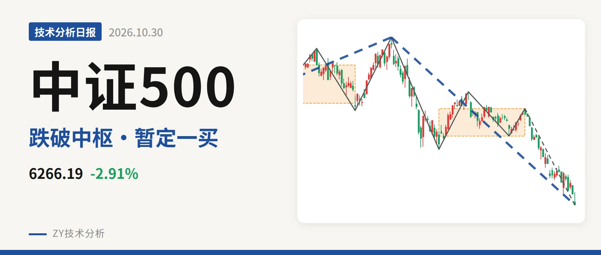
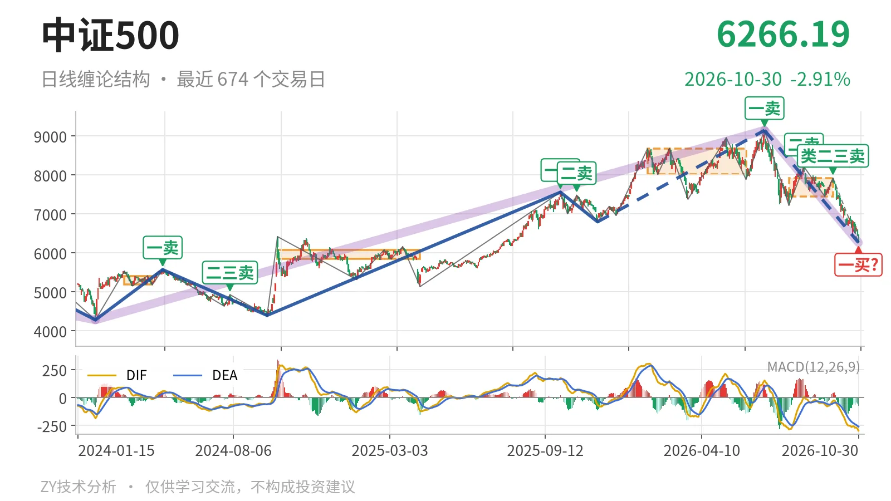
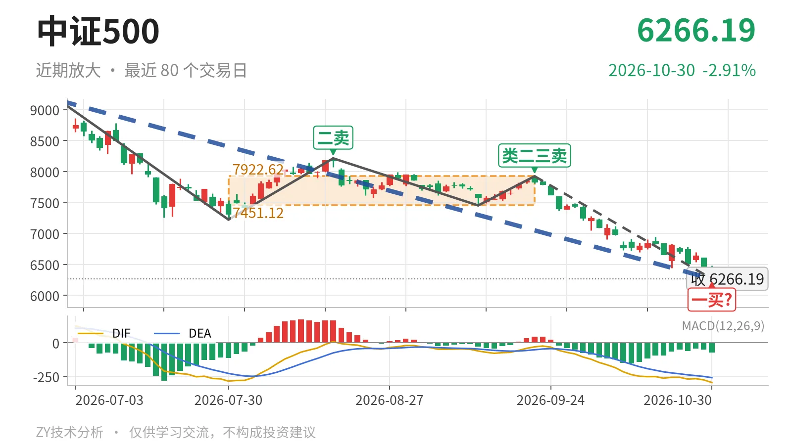

中证500｜跌破7451点中枢下沿，一买暂定

最近日线中枢 7451.12—7922.62点，收盘位于中枢之下
一句话：中证500跌破日线中枢下沿，下跌笔未破坏，暂定一买随新低变化
📉 走势结构：上涨段见高后回落，日线下跌仍在延伸
日线级别处在7月1日以来的下跌线段中，更大级别上涨段没有结束。从更大级别看，2024年2月5日至2026年7月1日的上涨走势由4281.24点升至9147.56点，结构未被破坏；7月1日至10月30日的下跌走势则把价格压回日线中枢下方。日线线段上，2025年11月24日至2026年7月1日的上涨段内含9笔，高点9147.56点后回落，当前下跌线段已含5笔，价格跌破最近日线中枢下沿，下跌结构没有被破坏。

🧭 中枢位置：跌破最近日线中枢，重心下移
最近一个日线笔中枢是7月30日至9月22日的7451.12—7922.62点，中轴7686.87点。最新收盘6266.19点低于下沿约1185点、幅度约15.9%，已经向下离开中枢，不是中枢内部震荡。对照1月26日至6月8日的8014.66—8671.35点中枢，最近中枢明显下移；价格已回到2022年4月27日至2023年8月4日线段中枢上沿6263.16点附近，进入更大级别中枢上沿地带。
🔄 买卖点：卖点一个比一个低，10月30日一买暂定
日线笔级别上，7月1日一卖9147.56点后，8月18日二卖8211.31点、9月22日类二三卖7922.62点，高点一个比一个低；因更大级别上涨段未结束，这些卖点只对应日线笔级别。10月30日一买6266.19点所在下跌笔9月22日至10月30日还在延续，因此是暂定的一买，会随该笔延续而变化。线段级别上，2025年11月24日三买6797.50点已经失守，说明该三买只对应次级别，日线上涨段的三买结构被破坏。

⚖️ 背驰观察：绿柱面积收缩，DIF低点仍走低
9月22日以来的下跌笔绿柱面积1725，低于7月1日至7月30日下跌笔的2687，但DIF低点-295.6低于后者的-285.2。最新收盘6266.19点新低，绿柱面积没有同步放大，DIF却仍在下移，只能算力度收缩，不是标准的新低不新弱；同时DIF仍在零轴之下，下跌动能没有完全消退。当前下跌笔未被破坏，背驰判断要以这段仍在延续的行情为准，暂不能定性。
🔎 关键位置：反抽能否回到7451点上方
反抽若回不到7451点上方，结构上构成三卖，日线下跌段延续。重新站上7687点中轴，回落更可能只是中枢扩展。下方看6263点附近的线段中枢上沿，跌破后继续观察5929点一线。当前价格位于中枢下方、反弹高点逐级走低，结构偏弱，弱在下跌笔未破坏且尚未回到中枢下沿。
⚠️ 本文为基于公开行情数据的缠论技术结构记录，由程序自动计算并生成，仅供学习交流，不构成任何投资建议。市场有风险，投资需谨慎。